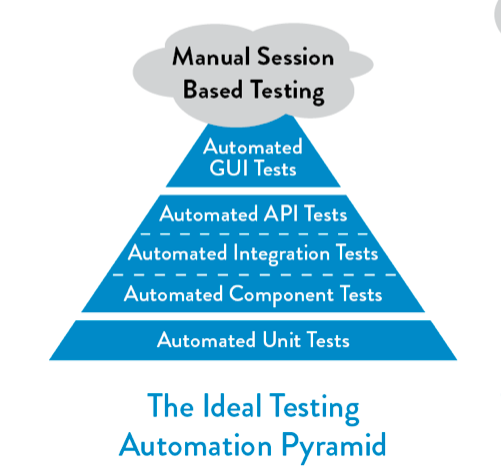
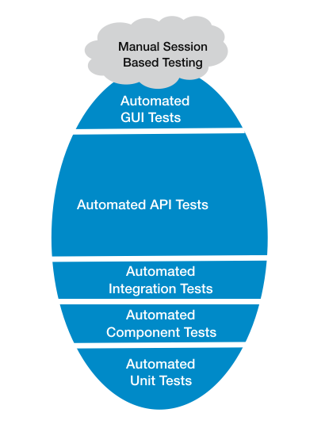
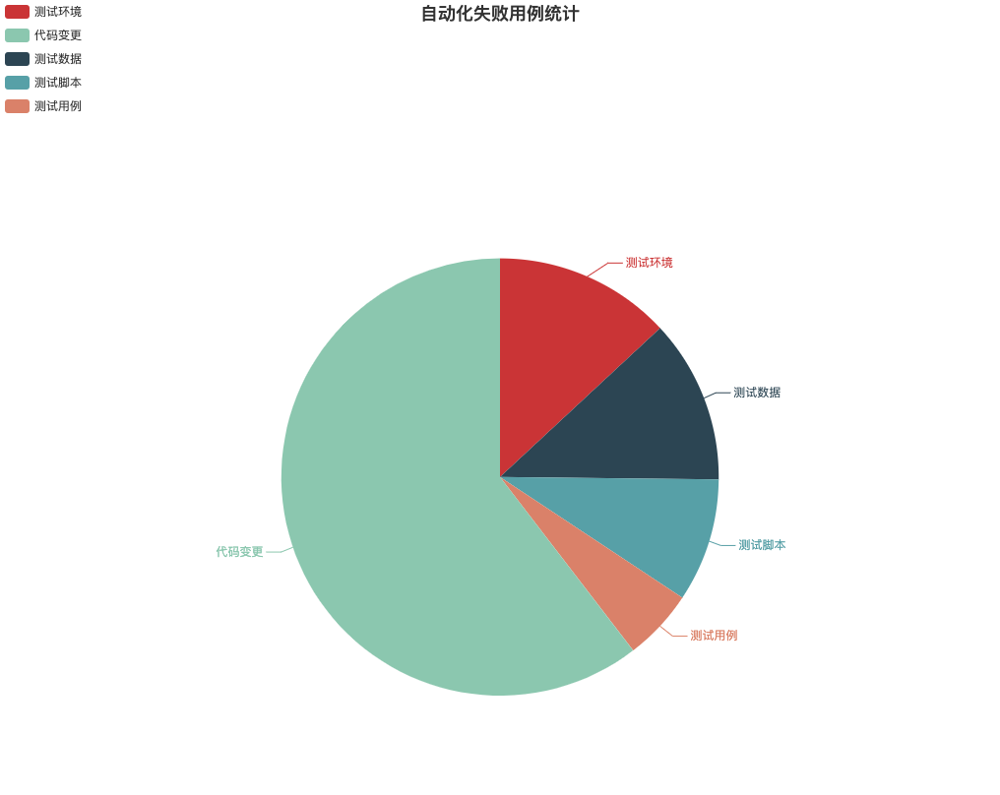

- 00 开篇词 从默默无闻到风靡全球，DevOps究竟有什么魔力？.md.html
- 01 DevOps的“定义”：DevOps究竟要解决什么问题？.md.html
- 02 DevOps的价值：数字化转型时代，DevOps是必选项？.md.html
- 03 DevOps的实施：到底是工具先行还是文化先行？.md.html
- 04 DevOps的衡量：你是否找到了DevOps的实施路线图？.md.html
- 05 价值流分析：关于DevOps转型，我们应该从何处入手？.md.html
- 06 转型之路：企业实施DevOps的常见路径和问题.md.html
- 07 业务敏捷：帮助DevOps快速落地的源动力.md.html
- 08 精益看板（上）：精益驱动的敏捷开发方法.md.html
- 09 精益看板（下）：精益驱动的敏捷开发方法.md.html
- 10 配置管理：最容易被忽视的DevOps工程实践基础.md.html
- 11 分支策略：让研发高效协作的关键要素.md.html
- 12 持续集成：你说的CI和我说的CI是一回事吗？.md.html
- 13 自动化测试：DevOps的阿克琉斯之踵.md.html
- 14 内建质量：丰田和亚马逊给我们的启示.md.html
- 15 技术债务：那些不可忽视的潜在问题.md.html
- 16 环境管理：一切皆代码是一种什么样的体验？.md.html
- 17 部署管理：低风险的部署发布策略.md.html
- 18 混沌工程：软件领域的反脆弱.md.html
- 19 正向度量：如何建立完整的DevOps度量体系？.md.html
- 20 持续改进：PDCA体系和持续改进的意义.md.html
- 21 开源还是自研：企业DevOps平台建设的三个阶段.md.html
- 22 产品设计之道：DevOps产品设计的五个层次.md.html
- 23 持续交付平台：现代流水线必备的十大特征（上）.md.html
- 24 持续交付平台：现代流水线必备的十大特征（下）.md.html
- 25 让数据说话：如何建设企业级数据度量平台？.md.html
- 26 平台产品研发：三个月完成千人规模的产品要怎么做？.md.html
- 27 巨人的肩膀：那些你不能忽视的开源工具.md.html
- 28 迈向云端：云原生应用时代的平台思考.md.html
- 29 向前一步：万人规模企业的DevOps实战转型案例（上）.md.html
- 30 向前一步：万人规模企业的DevOps实战转型案例（下）.md.html
- 期中总结 3个典型问题答疑及如何高效学习 (1).md.html
- 期中总结 3个典型问题答疑及如何高效学习.md.html
- 期末总结 在云时代，如何选择一款合适的流水线工具？.md.html
- 特别放送（一）成为DevOps工程师的必备技能（上）.md.html
- 特别放送（三）学习DevOps不得不了解的经典资料.md.html
- 特别放送（二）成为DevOps工程师的必备技能（下）.md.html
- 特别放送（五）关于DevOps组织和文化的那些趣事儿.md.html
- 特别放送（四）Jenkins产品经理是如何设计产品的？.md.html
- 结束语 持续改进，成就非凡！.md.html
- 捐赠
13 自动化测试：DevOps的阿克琉斯之踵
你好，我是石雪峰。
在古希腊神话中，战神阿克琉斯英勇无比，浑身刀枪不入，唯独脚后跟是他的致命弱点。在特洛伊战争中，他的脚后跟被一箭射中，倒地身亡，从此，阿克琉斯之踵就被用来形容致命的缺陷。我今天要跟你聊的自动化测试，就是DevOps的阿克琉斯之踵。
我之前走访过很多公司，我发现，在工程实践领域，比如配置管理、持续集成等，他们实践得还不错，但是却有两大通病，一个是研发度量，另一个就是自动化测试。
没有人会否认自动化测试的价值，而且很多公司也都或多或少地在实践自动化测试。但从整体来看，自动化测试的实施普遍不成体系，大多都在关注单点工具。另外，团队对自动化测试的真实效果也存在疑惑。如果不能解决这些问题，就很难突破实践DevOps的天花板。
那么，自动化测试究竟要解决什么问题，又适合哪些业务形态和测试场景呢？我们该如何循序渐进地推进建设，并且正确地度量效果以免踩坑呢？这些问题，就是我要在这一讲中跟你分享的重点内容。
自动化测试要解决什么问题？
产品交付速度的提升，给测试工作带来了很大的挑战。一方面，测试时间被不断压缩，以前三天的测试工作要在一天内完成。另一方面，需求的变化也给测试工作的开展带来了很大的不确定性。这背后核心的问题是，业务功能的累加导致测试范围不断扩大，但这跟测试时长的压缩是矛盾的。说白了，就是要测试的内容越来越多，但是测试的时间却越来越短。
全面测试会带来相对更好的质量水平，但是投入的时间和人力成本也是巨大的，而快速迭代交付就意味着要承担一定的风险。那么，究竟是要速度，还是要质量，这是一个很难回答的问题。
所以，要想提升测试效率，自然就会联想到自动化手段。实际上，自动化测试适用于以下几种典型场景：
- 有大量机械的重复操作，并且会反复执行的场景，比如批量的回归测试；
- 有明确的设计规范且相对稳定的场景，比如接口测试；
- 大批量、跨平台的兼容性测试，比如覆盖多种版本和多种机型的测试，几十个机型还可以接受，如果覆盖成百上千个机型，就只能依靠自动化了；
- 长时间不间断执行的测试，比如压力测试、可用性测试等。
这些典型场景往往都具备几个特征：设计明确、功能稳定、可多次重复、长期大批量执行等，核心就是通过自动化手段来解决测试成本的问题，也就是人的问题。但这并不意味着手工测试就没有价值了。相反，当人从重复性劳动中解放出来后，就可以投入到更有价值的测试活动中，比如探索性测试、易用性测试、用户验收测试等，这些都属于手工测试的范畴。
这听上去还挺合理的，可是，为什么很多公司还是倾向于采用手工测试的方式呢？实际上，并非所有的测试活动都适合自动化，而且，自动化测试建设也面临着一些问题。
- 投入产出比：很多需求基本上只会上线一次（比如促销活动类需求），那么，实现自动化测试的成本要比手动测试高得多，而且以后也不会再用了，这显然有点得不偿失。
- 上手门槛：自动化测试依赖代码方式实现，要开发一套配置化的测试框架和平台，对架构设计和编码能力都有很大的要求。但是，测试人员的编码能力一般相对较弱。
- 维护成本高：无论是测试环境、测试用例还是测试数据，都需要随着需求的变化不断进行调整，否则就很容易因为自动化测试过时，导致执行失败。
- 测试设备投入高：比如，移动App的测试需要有大量的手机资源，想要覆盖所有的手机型号、操作系统版本，本身就不太现实。更何况，有限的机器还经常被测试人员拿去做本地调试，这就进一步加剧了线上测试没有可用资源的情况。
自动化测试的设计
这么看来，自动化测试并不是一把万能钥匙，我们也不能指望一切测试都实现自动化。只有在合适的领域，自动化测试才能发挥出最大价值。那么，你可能就要问了，面对这么多种测试类型，到底要从哪里启动自动化测试的建设呢？
首先，我来给你介绍一下经典的测试三角形。这个模型描述了从单元测试、集成测试到UI测试的渐进式测试过程。越是靠近底层，用例的执行速度就越快，维护成本也越低。而在最上层的UI层，执行速度要比单元测试和接口测试要慢，比手工测试要快，相应的维护成本要远高于单元测试和接口测试。

图片来源：“DevOps Handbook”
这样看来，从靠近底层的单元测试入手是一个投入产出相对比较高的选择。但实际上，单元测试的执行情况因公司而异，有的公司能做到80%的覆盖率，但有的公司却寸步难行。毕竟，单元测试更多是由开发主导的，开发领导的态度就决定了运行的效果。但不可否认的是，单元测试还是非常必要的，尤其是针对核心服务，比如核心交易模块的覆盖率。当然，好的单元测试需要研发投入大量的精力。
对于UI层来说，执行速度和维护成本走向了另外一个极端，这也并不意味着就没有必要投入UI自动化建设。UI层是唯一能够模拟用户真实操作场景的端到端测试，页面上的一个按钮可能触发内部几十个函数调用，和单元测试每次只检查一个函数的逻辑不同，UI测试更加关注模块集成后的联动逻辑，是集成测试最有效的手段。
另外，很多测试人员都是从UI开始接触自动化的，再加上相对成熟的测试工具和框架，实施不依赖于源码，也是一种比较容易上手的自动化手段。在实际应用中，UI自动化可以帮助我们节省人工测试成本，提高功能测试的测试效率。不过，它的缺点也是比较明显的：随着敏捷迭代的速度越来越快，UI控件的频繁变更会导致控件定位不稳定，提高了用例脚本的维护成本。
综合考虑投入产出比和上手难度的话，位于中间层的接口测试就成了一种很好的选择。一方面，现代软件架构无论是分层还是服务调用模式，对接口的依赖程度都大大增加。比如典型的前后端分离的开发模式，前后端基本都是在围绕着接口进行开发联调。另一方面，与单元测试相比，接口测试调用的业务逻辑更加完整，并且具备清晰的接口定义，适合采用自动化的方式执行。
正因为如此，对于基于Web的应用来说，我更推荐椭圆形模型，也就是以中间层的API接口测试为主，以单元测试和UI测试为辅。你可以参考一下分层自动化测试模型图。

自动化测试的开发
有效的自动化测试离不开工具和平台的支持。以接口测试为例，最早都是通过cURL、Postman、JMeter等工具单机执行的。但是，一次成功的接口测试，除了能够发起服务请求之外，还需要前置的测试数据准备和后置的测试结果校验。对于企业的实际业务来说，不仅需要单接口的执行，还需要相对复杂的多接口，而且带有逻辑的执行，这就依赖于调用接口的编排能力，甚至是内建的Mock服务。
不仅如此，测试数据、用例、脚本的管理，测试过程中数据的收集、度量、分析和展示，以及测试报告的发送等，都是一个成熟的自动化测试框架应该具备的功能。
比如，对于UI自动化测试来说，最让人头疼的就是UI控件变化后的用例维护成本问题。解决方法就是操作层获取控件和控件本身的定位方法，进行解耦，这依赖于框架的设计与实现。在实际操作控件时，你可以通过自定义名称的方式来调用控件，自定义名称在控件相关配置文件中进行定义。在具体操作时，可以通过操作层之下的代理层来处理。示例代码如下：
public void searchItem(String id) {
getTextBox("SearchBar").clearText();
getTextBox("SearchBar").setText(id);
getButton("Search").click();
}
在代码中，搜索条控件被定义为SearchBar，通过调用代理层的getTextBox方法，得到一个文本输入框类型对象，并调用该对象的清除方法。然后，在对应的控件配置文件中添加对应的自定义名称和控件的定位方法。
这样一来，即便控件发生改变，对于实际操作层的代码来说，由于采用的是自定义名称，所以你不需要修改逻辑，只要在对应的控件配置文件中，替换控件的定位方法就行了。关于具体的控件配置文件，示例代码如下：
<TextBox comment="首页搜索框" id="SearchBar">
<iOS>
<appium>
<dependMethod methodName="findElementByXPath">
<xpath>
//XCUIElementTypeNavigatorBar[@name="MainPageView"]/XCUIElementTypeOther/...
</xpath>
</dependMethod>
</appium>
</iOS>
</TextBox>
当然，为了简化测试人员的编写用例成本，你可以在操作层使用Page-Object模式，针对页面或模块封装操作方式，通过一种符合认知的方式，来实现具体的功能操作。这样一来，在实际编写用例的时候，你就可以非常简单地调用操作层的接口定义。示例代码如下：
@TestDriver(driverClass = AppiumDriver.class)
public void TC001() {
String id='10000'
page.main.switchView(3);
page.cart.clearShoppingCart();
page.main.switchView(0);
page.search.searchProduct(id);
page.infolist.selectlist(0);
page.infodetail.clickAddCart();
Assert.assertTrue(page.cart.isProductCartExist(), "商品添加成功")
}
从这些示例中，我们可以看出，一个良好的自动化测试框架，可以显著降低测试人员编写测试用例的门槛，以及测试用例的维护成本。对于一个成熟的平台来说，平台易用性是非常重要的能力，通过DSL方式来声明测试过程，可以让测试人员聚焦在测试业务逻辑的设计和构建上，大大提升自动化测试的实现效率。
关于自动化测试框架的能力模型，我给你分享你一份资料，你可以点击网盘获取，提取码是gk9w。这个能力模型从测试脚本封装、测试数据解耦、测试流程编排、报告生成等多个方面，展示了框架建设的各个阶段应该具备的能力。
自动化测试结果分析
那么，我们该如何衡量自动化测试的结果呢？当前比较常用的方式是覆盖率，不过问题是，测试覆盖率提升就能发现更多的缺陷吗？
一家大型金融公司的单元测试覆盖率达到了80%，接口覆盖率更是达到了100%，从这个角度来看，他们的自动化测试做得相当不错。但是，当我问到自动化测试发现的问题数量占到整体问题的比例时，他们的回答有点出人意料。在这么高的覆盖率基础上，自动化测试发现的问题占比仅仅在5%左右。那么，花了这么大力气建设的自动化测试，最后仅仅发现了5%的有效问题，这是不是说明自动化测试的投入产出比不高呢？
实际上，说自动化测试是为了发现更多的缺陷，这是一个典型的认知误区。在实际项目中，手工测试发现的缺陷数量要比自动化测试发现的缺陷数量多得多。自动化测试更多是在帮助守住软件质量的底线，尤其是应用在回归测试中，自动化测试可以确保工作正常的已有功能不会因为新功能的引入而带来质量回退。可以这么说，如果自动化测试覆盖率足够高，那么软件质量一定不会差到哪儿去。
在自动化测试领域，除了追求覆盖率一个指标以外，自动化测试的结果分析也值得重点关注一下。如果自动化测试的结果并不准确，甚至带来大量误报的话，这对团队来说反而是一种干扰。关于测试误报，是指由于非开发代码变更导致的自动化测试用例执行失败的情况。业界对于误报率的普遍定义是：
自动化测试误报率=非开发变更引入的问题用例数量/测试失败的用例数量
比如，单次自动化测试执行了100个用例，其中有20个用例失败，这20个失败用例有5个是由于本次功能或代码变更引入的，也就是真实的缺陷，那么误报率就等于：（20 - 5）/20 = 75%
测试误报率是体现自动化测试稳定性的一个核心指标。对于不同测试类型和产品形态，误报的的原因有很多。比如测试环境的网络不稳定导致的连接超时、测试脚本和测试工具本身的固有缺陷导致的执行失败、测试数据不齐备、测试资源不可用等等。
由于测试误报的客观存在，即便执行了自动化测试并给出了测试结果，但还是需要人工审查判断之后，才能将真正的问题上报缺陷系统。这样一来，在自动化执行末端加入了人工处理，就导致自动化测试难以大规模推行，这也是自动化测试略显“鸡肋”的原因之一。
那么，要如何解决这个问题呢？这就要依赖于自动化测试结果的分析啦。
- 对自动化测试的问题进行分类。你要弄清楚一次失败是环境问题、网络问题、功能变更，还是系统缺陷？你需要将失败的用例归纳到这些分类之中。当一个类别的问题非常多的时候，你可以考虑进行拆分，比如网络问题，你可以拆分为网络不可达、延迟超时、域名解析错误等等。
- 增加已有分类的自动识别能力。比如，对于捕获到的常见异常，可以根据异常信息自动上报到对应的错误分类，从而简化人工识别和归类错误的工作量。
- 提升自动化测试工具和环境的健壮性，对已知问题增加一定的重试机制。
- 持续积累和丰富错误分类，有针对性地开展改进工作，从而不断提升自动化测试的稳定性。
我跟你分享一幅某公司的自动化测试结果分析示意图。通过统计错误的分类，可以看出错误的占比情况，并且针对常见的误报类型进行有针对性的优化，并建立度量指标来跟踪长期结果，从而保证自动化测试结果的整体可信度。这些工作都需要长期的投入才能看出成效，这也是让自动化测试价值最大化和团队能力提升的必经之路。

总结
总结一下，这一讲我给你介绍了有关自动化测试的四个方面，包括自动化测试要解决的问题和适用场景、实施的路径、框架工具开发的典型思路以及结果分析的要点。希望能够帮你建立起对自动化测试这个“老大难”问题的全面认知，让你在推进自动化测试能力建设的时候有迹可循。
思考题
你所在的企业在进行自动化建设时，有哪些困境和问题，你们是如何解决的呢？
欢迎在留言区写下你的思考和答案，我们一起讨论，共同学习进步。如果你觉得这篇文章对你有所帮助，欢迎你把文章分享给你的朋友。
© 2019 - 2023 Liangliang Lee. Powered by gin and hexo-theme-book.